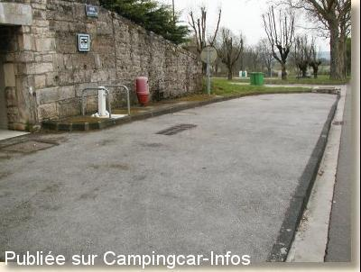
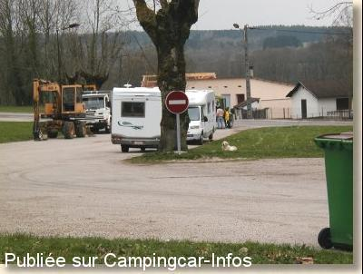

ASN = Aire de services avec stationnement nuit possible de :
ORGELET
(N° 347)
Accès/adresse :
Rue du Faubourg de l'Orme
Champ de Foire
39270 ORGELET
Champ de Foire
39270 ORGELET
Latitude : (Nord) 46.5225° Décimaux ou 46° 31′ 21′′
Longitude : (Est) 5.60805° Décimaux ou 5° 36′ 28′′
Tarif : Gratuit
Services :


Commerces
Autres informations :
Ouverte toute l'année
10 emplacements
Stationnement limité 48 h
Tel : +33(0)384 355 454

Le 12/03/2003 par Mchr68

Le 12/03/2003 par Mchr68
de
ibe-4264
le 01/09/2015 :
bonjour,
tous les services existent toujours sur place. En revanche beaucoup de circulation sur la route à proximité.
bonjour,
tous les services existent toujours sur place. En revanche beaucoup de circulation sur la route à proximité.
de
Noël
le 24/09/2014 :
Attention la borne de service est dêplacée derriëre le supermarché SUPERU (route de Lons, à côté de la station carburant du supermarché) avec une participation de 2€ pour le plein d'eau et la vidange de la cassette (limite de temps 20 minutes pour effectuer son service).
Correct.
Attention la borne de service est dêplacée derriëre le supermarché SUPERU (route de Lons, à côté de la station carburant du supermarché) avec une participation de 2€ pour le plein d'eau et la vidange de la cassette (limite de temps 20 minutes pour effectuer son service).
Correct.
de
Maryline Lucas
le 02/11/2013 :
cette aire est très agréable avec tous les services gratuits et des toilettes publiques.
Par contre, il y a eu beaucoup de circulation tard et le soir et tôt le matin, à cause du village qui est en travaux. De ce fait la route de Lons-le-Saunier est déviée et les camions passent près de l'aire. Dommage, mais ce n'est que provisoire, et à l'occasion nous repasserons, car le village est attrayant.
Merci à la commune pour son accueuil
cette aire est très agréable avec tous les services gratuits et des toilettes publiques.
Par contre, il y a eu beaucoup de circulation tard et le soir et tôt le matin, à cause du village qui est en travaux. De ce fait la route de Lons-le-Saunier est déviée et les camions passent près de l'aire. Dommage, mais ce n'est que provisoire, et à l'occasion nous repasserons, car le village est attrayant.
Merci à la commune pour son accueuil
de
bernard42
le 19/07/2013 :
endroit calme et avec une belle pelouse
les commerces à proximité
merci de prendre aussi soins de nous
endroit calme et avec une belle pelouse
les commerces à proximité
merci de prendre aussi soins de nous
de
lufloarsa
le 28/09/2012 :
de passage le 18 juillet,
aire très agréable, beaucoup de monde, ne pas arriver trop tard, mais très calme
de passage le 18 juillet,
aire très agréable, beaucoup de monde, ne pas arriver trop tard, mais très calme
de
claire
le 10/03/2012 :
De passage dans le sud du Jura nous y avons dormi une nuit. Endroit calme. Fruitière vers l'office du tourisme. Joli petit village proche du lac de Vouglans que j'ai trouvé magnifique.
De passage dans le sud du Jura nous y avons dormi une nuit. Endroit calme. Fruitière vers l'office du tourisme. Joli petit village proche du lac de Vouglans que j'ai trouvé magnifique.
de
Nenettemamita
le 17/03/2009 :
De passage dans le coin, nous en avons profité pour aller voir comment était l'aire. Le stationnement est autorisé sur une place bien ombragée sympa ! Pour les services, cela m'a l'air pratique peut-être car nous sommes passés hors saison. Tout y est gratuit, il y a aussi des WC publics, merci à la mairie.
De passage dans le coin, nous en avons profité pour aller voir comment était l'aire. Le stationnement est autorisé sur une place bien ombragée sympa ! Pour les services, cela m'a l'air pratique peut-être car nous sommes passés hors saison. Tout y est gratuit, il y a aussi des WC publics, merci à la mairie.
de
Capelli
le 02/05/2008 :
Pour l'aire d'accord, c'est calme et la ville est jolie. Mais pour la vidange, ce n'est pas terrible; encore moins pour la cassette des WC. Nous n'avons même pas osé prendre de l'eau, c'était trop sale peut-être car c'était le 5ème jour d'un grand week-end?
Marie-Agnès
Pour l'aire d'accord, c'est calme et la ville est jolie. Mais pour la vidange, ce n'est pas terrible; encore moins pour la cassette des WC. Nous n'avons même pas osé prendre de l'eau, c'était trop sale peut-être car c'était le 5ème jour d'un grand week-end?
Marie-Agnès
de
blanc jm
le 03/09/2006 :
Passé une nuit ici fin août. Plutôt calme et proche des commerces. Borne peut-être un peu difficile d'accès mais bien quand même.
Passé une nuit ici fin août. Plutôt calme et proche des commerces. Borne peut-être un peu difficile d'accès mais bien quand même.